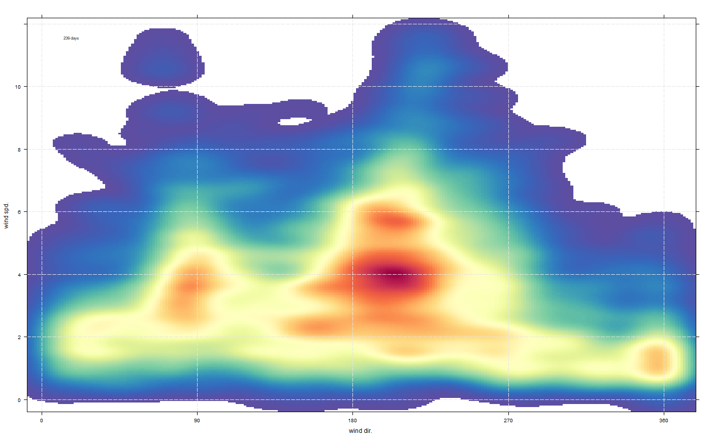

This function is used to explore the conditions leading to exeedances of air quality limits. Currently the focus is on understanding the conditions under which daily limit values for PM10 are in excess of a specified threshold. Kernel density estimates are calculated and plotted to highlight those conditions.
kernelExceed( polar, x = "wd", y = "ws", pollutant = "pm10", type = "default", by = c("day", "dayhour", "all"), limit = 50, data.thresh = 0, more.than = TRUE, cols = "default", nbin = 256, auto.text = TRUE, ... )
| polar | A data frame minimally containing |
|---|---|
| x | x-axis variable. Mandatory. |
| y | y-axis variable. Mandatory |
| pollutant | Mandatory. A pollutant name corresponding to a variable in
a data frame should be supplied e.g. |
| type | The type of analysis to be done. The default is will produce a
single plot using the entire data. Other types include "hour" (for hour
of the day), "weekday" (for day of the week) and "month" (for month of
the year), "year" for a polarPlot for each year. It is also possible to
choose |
| by |
|
| limit | The threshold above which the |
| data.thresh | The data capture threshold to use (
the data using |
| more.than | If |
| cols | Colours to be used for plotting. Options include "default",
"increment", "heat", "spectral", "hue", "brewer1" and user defined (see
manual for more details). The same line colour can be set for all
pollutant e.g. |
| nbin | number of bins to be used for the kernel density estimate. |
| auto.text | Either |
| ... | Other graphical parameters passed onto |
To be completed.
The kernelExceed functions is for exploring the conditions under
which exceedances of air pollution limits occur. Currently it is focused on
the daily mean (European) Limit Value for PM10 of 50~ug/m3 not to be
exceeded on more than 35 days. However, the function is sufficiently
flexible to consider other limits e.g. could be used to explore days where
the daily mean are greater than 100~ug/m3.
By default the function will plot the kernel density estimate of wind speed
and wind directions for all days where the concentration of
pollutant is greater than limit. Understanding the conditions
where exceedances occur can help with source identification.
The function offers different ways of selecting the data on days where the
pollutant are greater than limit through setting by.
By default it will select all data on days where pollutant is
greater than limit. With the default setting of by it will
select all data on those days where pollutant is greater than
limit, even if individual data (e.g. hours) are less than
limit. Setting by = "dayhour" will additionally ensure that
all data on the those dates are also greater than limit. Finally,
by = "all" will select all values of pollutant above limit,
regardless of when they occur.
The usefulness of the function is greatly enhanced through using
type, which conditions the data according to the level of another
variable. For example, type = "season" will show the kernel density
estimate by spring, summer, autumn and winter and type = "so2" will
attempt to show the kernel density estimates by quantiles of SO2
concentration. By considering different values of type it is
possible to develop a good understanding of the conditions under which
exceedances occur.
To aid interpretation the plot will also show the estimated number
of days or hours where exeedances occur. For type = "default" the
number of days should exactly correspond to the actual number of exceedance
days. However, with different values of type the number of days is
an estimate. It is an estimate because conditioning breaks up individual
days and the estimate is based on the proportion of data calculated for
each level of type.
This function automatically chooses the bandwidth for the kernel density estimate. We generally find that most data sets are not overly sensitive to the choice of bandwidth. One important reason for this insensitivity is likley to be the characteristics of air pollution itself. Due to atmospheric dispersion processes, pollutant plumes generally mix rapidly in the atmosphere. This means that pollutant concentrations are ‘smeared-out’ and extra fidelity brought about by narrower bandwidths do not recover any more detail.
David Carslaw
# Note! the manual contains other examples that are more illuminating # basic plot kernelExceed(mydata, pollutant = "pm10") #> (loaded the KernSmooth namespace)  # condition by NOx concentrations if (FALSE) kernelExceed(mydata, pollutant = "pm10", type = "nox")